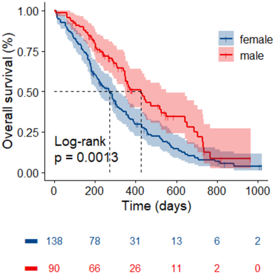
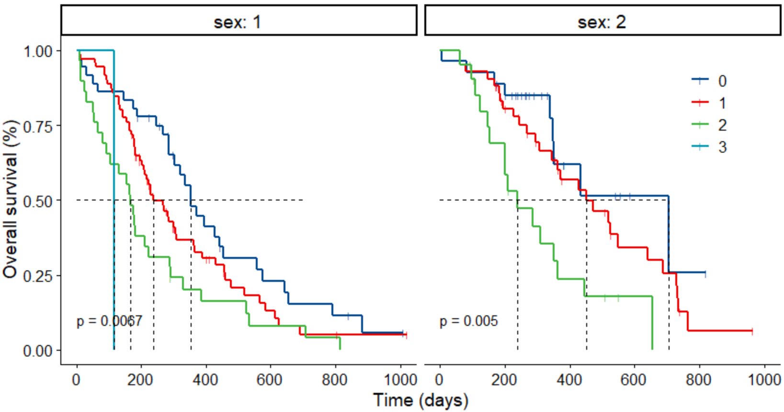

Survival curve
生存分析是研究生存时间的分布规律，以及生存时间和相关因素之间关系的一种统计分析方法。
主要应用
Cancer studies for patients survival time analyses（临床癌症上病人生存分析）
What is the impact of certain clinical characteristics on patient’s survival（某些临床特征对病人的影响有哪些）
What is the probability that an individual survives 3 years?（病人个体三年存活率有多少）
Are there differences in survival between groups of patients?（两组病人之间的生存率有什么差异）
生存分析使用的方法
Kaplan-Meier plots to visualize survival curves（根据生存时间分布，估计生存率以及中位生存时间，以生存曲线方式展示，从而分析生存特征，一般用Kaplan-Meier法，还有寿命法）
Log-rank test to compare the survival curves of two or more groups（通过比较两组或者多组之间的的生存曲线，一般是生存率及其标准误，从而研究之间的差异，一般用log rank检验）
Cox proportional hazards regression to describe the effect of variables on survival（用Cox风险比例模型来分析变量对生存的影响，可以两个及两个以上的因素，很常用）
所以一般做生存分析，可以用KM（Kaplan-Meier）方法估计生存率，做生存曲线，然后可以根据分组检验一下多组间生存曲线是否有显著的差异，最后用Cox风险比例模型来研究下某个因素对生存的影响
基本术语
- Event（事件）：在癌症研究中，事件可以是Relapse，Progression以及Death
- Survival time（生存时间）：一般指某个事件的开始到终止这段事件，如癌症研究中的疾病确诊到缓解或者死亡，其中有几个比较重要的肿瘤临床试验终点：
- OS（overall survival）：指从开始到任意原因死亡的时间，我们一般见到的5年生存率、10年生存率都是基于OS的
- progression-free survival（PFS，无进展生存期）：指从开始到肿瘤发生任意进展或者发生死亡的时间；PFS相比OS包含了恶化这个概念，可用于评估一些治疗的临床效益
- time to progress（TTP，疾病进展时间）：从开始到肿瘤发生任意进展或者进展前死亡的时间；TTP相比PFS只包含了肿瘤的恶化，不包含死亡
- disease-free survival（DFS，无病生存期）：指从开始到肿瘤复发或者任何原因死亡的时间；常用于根治性手术治疗或放疗后的辅助治疗，如乳腺癌术后内分泌疗法等：
- event free survival（EFS，无事件生存期）：指从开始到发生任何事件的时间，这里的事件包括肿瘤进展，死亡，治疗方案的改变，致死副作用等（主要用于病程较长的恶性肿瘤、或该实验方案危险性高等情况下）
- Censoring（删失）：这经常会在临床资料中看到，生存分析中也有其对应的参数，一般指不是由死亡引起的的数据丢失，可能是失访，可能是非正常原因退出，可能是时间终止而事件未发等等，一般在展示时以‘+’号显示
- left censored（左删失）：只知道实际生存时间小于观察到的生存时间
- right censored（右删失）：只知道实际生存时间大于观察到的生存时间
- interval censored（区间删失）：只知道实际生存时间在某个时间区间范围内
我们前面了解到生存分析需要计算生存率，而生存率（survival rate）则可以看作条件生存概率（conditional probability of survival）的累积，比如三年生存率则是第1-3年每年存活概率的乘积
生存分析的方法
一般可以分为三类：
- 参数法：知道生存时间的分布模型，然后根据数据来估计模型参数，最后以分布模型来计算生存率
- 非参数法：不需要生存时间分布，根据样本统计量来估计生存率，常见方法Kaplan-Meier法（乘积极限法）、寿命法
- 半参数法：也不需要生存时间的分布，但最终是通过模型来评估影响生存率的因素，最为常见的是Cox回归模型
而生存曲线（survival curve）则是将每个时间点的生存率连接在一起的曲线，一般随访时间为X轴，生存率为Y轴；曲线平滑则说明高生存率，反之则低生存率；中位生存率（median survival time）越长，则说明预后较好
简单看下Kaplan-Meier方法是怎么计算的：
S(ti)=S(ti−1)(1−di/ni)
- S(ti−1)指在ti−1年还存活的概率
- ni指在在ti年之前还存活的人数
- di指在事件发生的人数
- t0=0，S(0)=1
实际应用
单变量生存曲线分析
1 | library(survival) |

按某变量画分面生存曲线
1 | library(survival) |

Drawing Survival Curves Using ggplot2 — ggsurvplot • survminer (datanovia.com)
R绘图| Kaplan-Meier曲线及美化_木舟笔记的博客-CSDN博客
R语言-Survival analysis（生存分析） | KeepNotes blog (bioinfo-scrounger.com)
If you like this blog or find it useful for you, you are welcome to comment on it. You are also welcome to share this blog, so that more people can participate in it. If the images used in the blog infringe your copyright, please contact the author to delete them. Thank you !